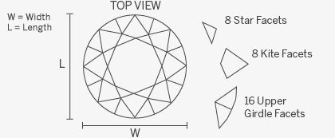
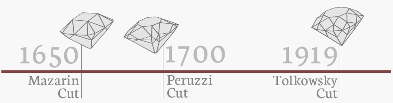

Round:
The round brilliant cut is the most popular diamond shape, accounting for more than half of all diamonds sold today. Although developed in Europe, the round brilliant is sometimes referred to as the American Ideal Cut. With 58 facets divided amongst its crown, girdle and pavilion and a typical ratio between 1.00 and 1.02, it yields maximum shine as the cut naturally follows the rough diamond crystal. The round brilliant is the most researched cut in the industry; for over a century, diamond cutters have used advanced scientific theories of light reflection and precise mathematical calculations to optimize its fire and brilliance.
The origins of the round brilliant cut can be traced back to the middle of the 17th century when diamond cutters began using more refined and complex ways of cutting diamonds. The early brilliant cuts were known as Mazarins, after their designer Cardinal Mazarin, who made the first cross-cut diamond in 1650. Through a series of gradual transformations and developments over the course of the 18th century, the Mazarins gave birth to the Portuguese Peruzzi, “old mine,” or “old European cut” in the 1700s. It was not until 1919 that the early modern round brilliant was created; at the time it was referred to as the Tolkowsky cut named after its creator, Russian mathematician and diamond enthusiast Marcel Tolkowsky.
